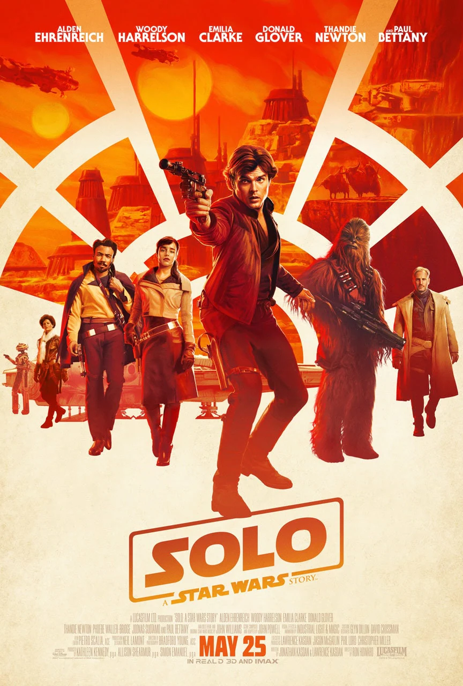
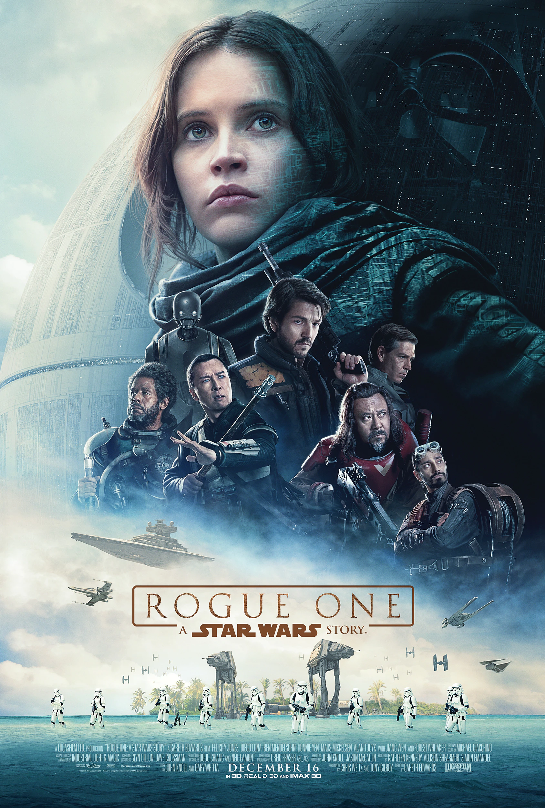
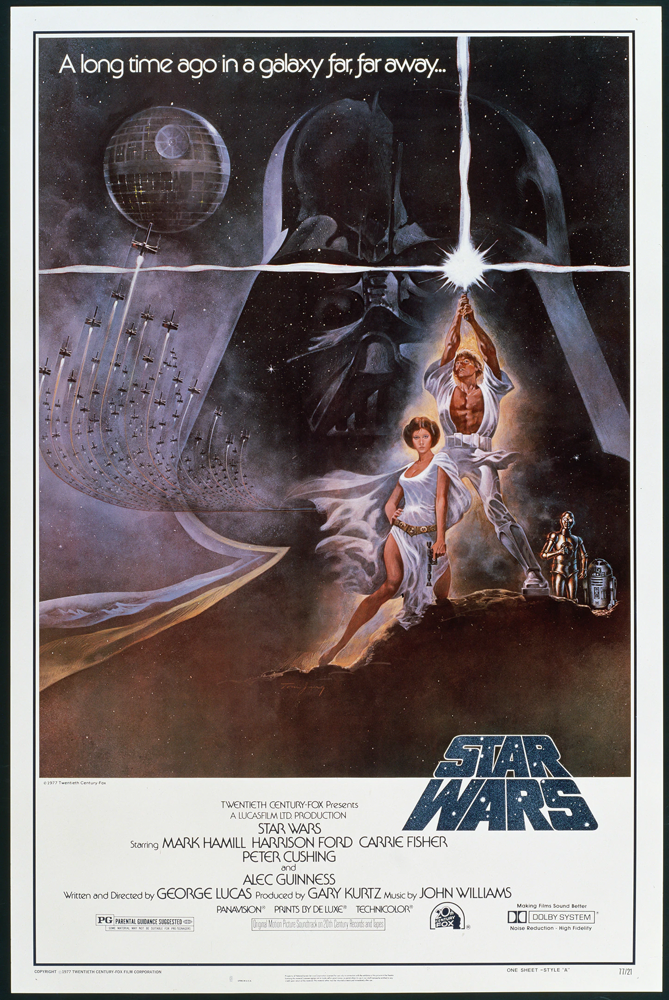
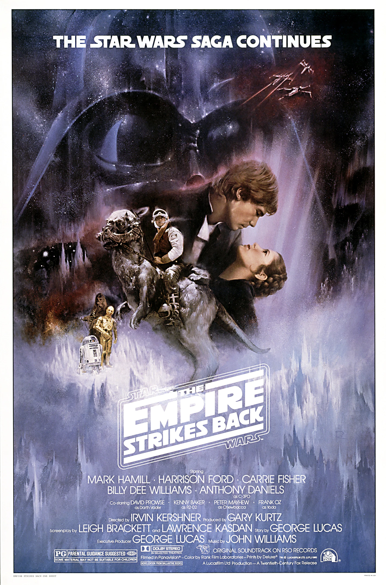
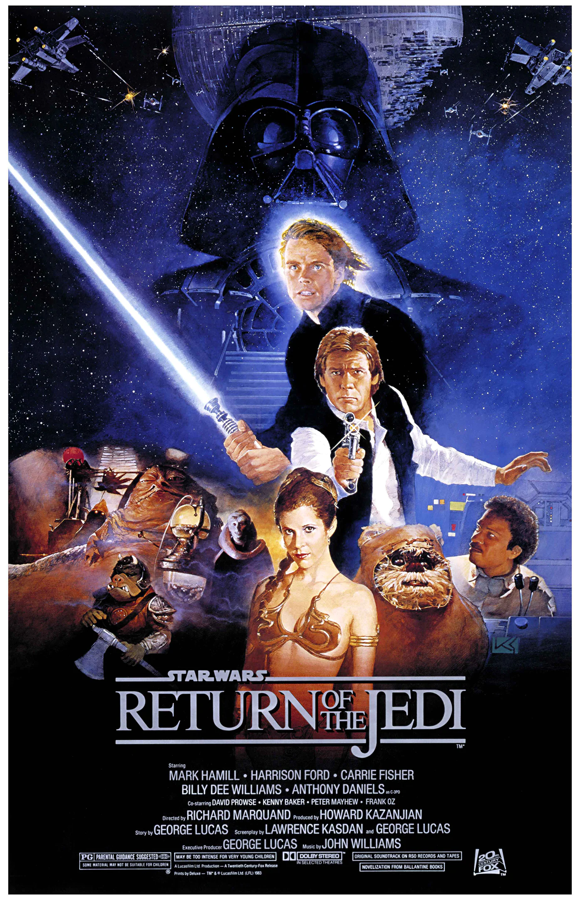
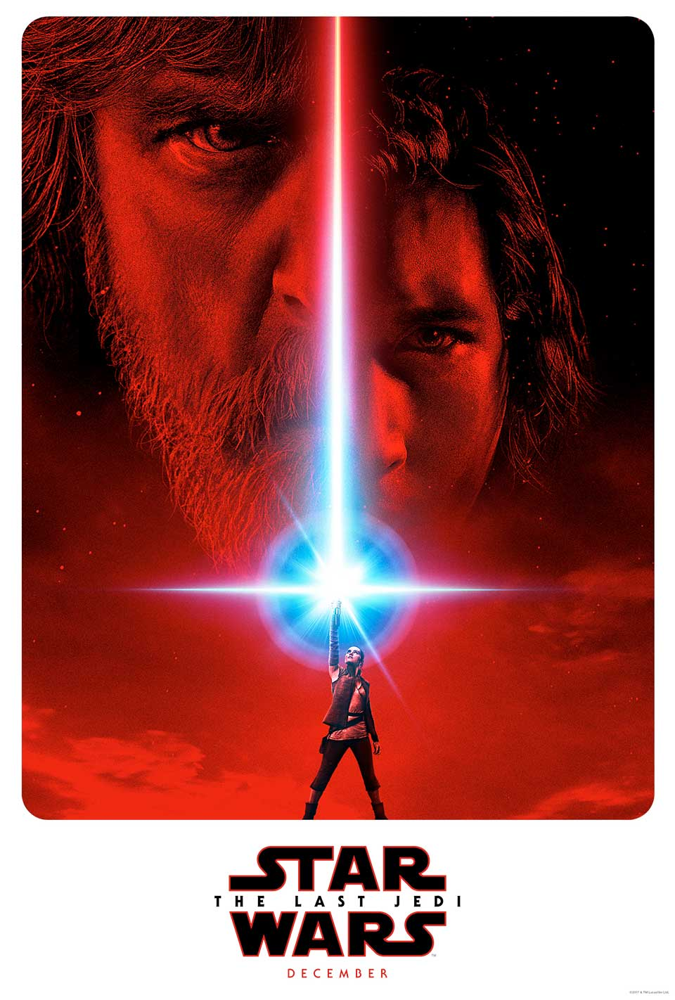
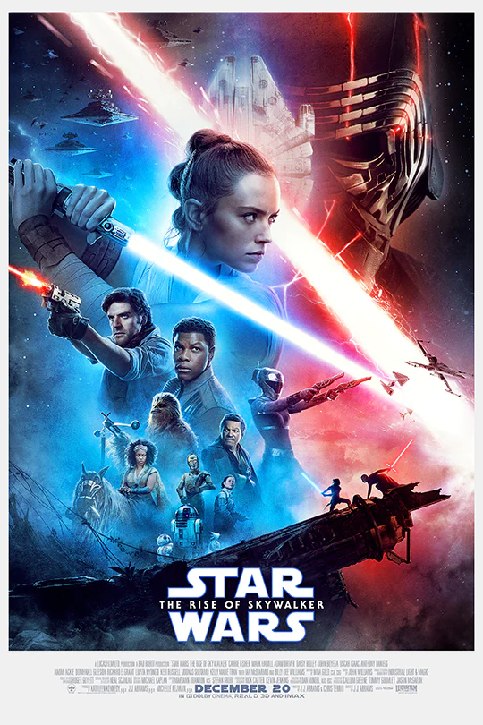

ABOUT US
CONTACTS
HOME
FILMS
SERIES
STORE
DATABANK
ARCHIVE
Welcome to timeline
Star Wars
32 | BBY
Star Wars: The Phantom Menace (Episode I)
Experience the heroic action and unforgettable adventures of Star Wars: Episode I - The Phantom Menace. See the first fateful steps in the journey of Anakin Skywalker.
22 | BBY
Star Wars: Attack of the Clones (Episode II)
Watch the seeds of Anakin Skywalker's transformation take root in Star Wars: Episode II - Attack of the Clones. Ten years after the invasion of Naboo, the galaxy is on the brink of civil war.
19 | BBY
Star Wars: Revenge of the Sith (Episode III)
Discover the true power of the dark side in Star Wars: Episode III - Revenge of the Sith. Years after the onset of the Clone Wars, the noble Jedi Knights lead a massive clone army into a galaxy-wide battle against the Separatists.
10 | BBY

Solo: A Star Wars Story
Board the Millennium Falcon and journey to a galaxy far, far away in Solo: A Star Wars Story, an all-new adventure with the most beloved scoundrel in the galaxy. Through a series of daring escapades deep within a dark and dangerous criminal underworld, Han Solo meets his mighty future copilot Chewbacca and encounters the notorious gambler Lando Calrissian, in a journey that will set the course of one of the Star Wars saga’s most unlikely heroes.
00 | BBY

Rogue One: A Star Wars Story
From Lucasfilm comes the first of the Star Wars standalone films, “Rogue One: A Star Wars Story,” an all-new epic adventure. In a time of conflict, a group of unlikely heroes band together on a mission to steal the plans to the Death Star, the Empire’s ultimate weapon of destruction.
00 | BBY | ABY

Star Wars: A New Hope (Episode IV)
Luke Skywalker begins a journey that will change the galaxy in Star Wars: Episode IV - A New Hope. Nineteen years after the formation of the Empire, Luke is thrust into the struggle of the Rebel Alliance when he meets Obi-Wan Kenobi, who has lived for years in seclusion on the desert planet of Tatooine.
3 | ABY

Star Wars: The Empire Strikes Back (Episode V)
After the destruction of the Death Star, Imperial forces continue to pursue the Rebels. After the Rebellion’s defeat on the ice planet Hoth, Luke journeys to the planet Dagobah to train with Jedi Master Yoda, who has lived in hiding since the fall of the Republic.
4 | ABY

Star Wars: Return of the Jedi (Episode VI)
After a quick trip back to Tatooine, Luke Skywalker, Leia Organa, and Han Solo are reunited and join up with the amassing rebel fleet to take down the evil Empire once and for all. But the Empire is plotting too.
34 | ABY
Star Wars: The Force Awakens (Episode VII)
Thirty years since the destruction of the second Death Star, the sinister First Order, commanded by the mysterious Snoke and apprentice Kylo Ren, rise from the ashes of the Empire. The Resistance, led by General Leia Organa, attempts to thwart the First Order's threat, but they're desparate for help.
34 | ABY

Star Wars: The Last Jedi (Episode VIII)
The Resistance is in desperate need of help when they find themselves impossibly pursued by the First Order. While Rey travels to a remote planet called Ahch-To to recruit Luke Skywalker to the Resistance, Finn and Rose, a mechanic, go on their own mission in the hopes of helping the Resistance finally escape the First Order.
35 | ABY

Star Wars: The Rise of Skywalker (Episode IX)
Lucasfilm and director J.J. Abrams join forces once more to take viewers on an epic journey to a galaxy far, far away with Star Wars: The Rise of Skywalker, the riveting conclusion of the landmark Skywalker saga, in which new legends will be born and the final battle for freedom is yet to come.